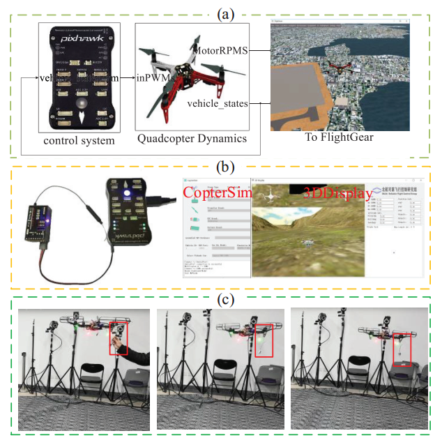

4. Attitude Control Based on ADRC Law¶
ADRC law is a more and more popular method in practice, with the structure of ADRC shown as follow. Obviously, it is more complex than PID controllers often used in autopilots. It will be used for testing.

The controller is designed in Simulink, and the SIL simulation is performed,. We can easily observe the interested states in Simulink and adjust the model to make it satisfied. After that, in the HIL simulation, only a simple modification of the model’s output is made for C/C++ code generation, but the controller will keep the same as the SIL simulation. The generated C/C++ code will be uploaded to Pixhawk automatically. Then, HIL simulation can be performed. In this process, we can manually control the multicopter and observe the aircraft’s response. Controller parameters can be adjusted according to the HIL simulation performance. Finally, the actual flight test is performed. We add 0.2kg weight to a 1.4kg multicopter as an external disturbance. Under the influence of external disturbance, the multicopter tilts slightly and then begins to adjust its attitude. After the adjustment, the multicopter returns to the horizontal state and rejects disturbance by itself. It should be noted that, based on the proposed platform, the designer only needs to design and improve the controller in Simulink. Basically, they are almost the same in SIL simulation, HIL simulation and real flight. The video can be found at https://flyeval.com/course/.
